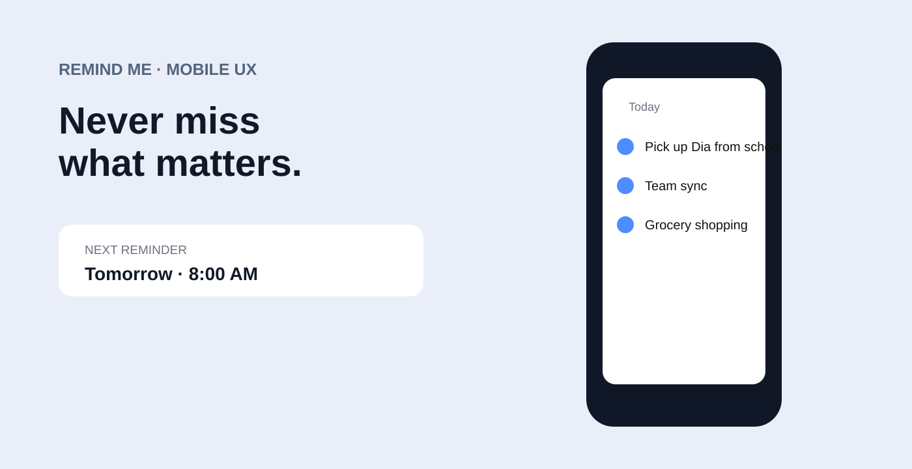

Selected original visual from my Behance portfolio.
A reminder product can easily become another source of cognitive load.
As tasks accumulate, equal visual treatment makes everything feel urgent while weak hierarchy makes important items disappear. The product needs to help people capture an intention quickly, understand what deserves attention and complete it without unnecessary navigation.
My role: make hierarchy the product strategy
I focused the experience on the moments that create friction: quick capture, prioritization, timing and completion. Rather than adding complexity through more controls, the design makes the most important decision visible and keeps secondary settings out of the critical path.
Strategy: make priority visible
The concept centers quick capture, strong hierarchy and lightweight interactions. The system gives tasks different levels of visual weight so the interface can communicate urgency and relevance before the user opens an item.
Move from intention to a saved reminder with minimal interruption.
Make importance and timing visible without forcing users into complex setup.
Use explicit states so completion feels clear and unfinished work remains understandable.
Interaction and UI direction
Structured cards, compact controls and explicit states make the experience scannable and action-oriented. Timing and completion are core information, not secondary settings hidden behind configuration screens.
Leadership impact
This focused mobile exploration shows how I use hierarchy and interaction strategy to turn an everyday utility into a clearer decision environment—and how small products still benefit from disciplined product thinking.